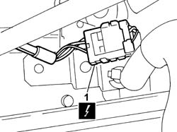
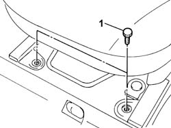
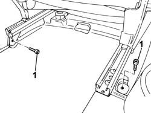

7045A13 front seat with side bag r r
- Path
- Procedures > 70 FITTINGS > 7045 FRONT SEATS > 7045A front seat assembly > 7045A13 front seat with side bag r r
- Kind
- repair procedure (removal / refitting; the operation number is the code)
- Applies to
- all engines; all production periods
- Interactive page
- https://sloeber94.github.io/elrnDB-fPnd/en/#/2753223
Applies to: all engines; all production periods
Applies to: all engines; all production periods
 Removing
Removing
 Refitting
RefittingMove the seat back completely.
1. Disconnect the electrical connection.
 | Name | Connector |
|---|---|---|
1 | Driver's Side Bag | Q30 |
| Name | Connector |
|---|---|---|
1 | Passenger Side Bag | Q31 |

Applies to: all engines; all production periods
1. Undo the front fixing bolts.

Applies to: all engines; all production periods
Move the seat completely forwards.
1. Undo the rear fixing bolts.

Applies to: all engines; all production periods
Remove the seat.
Applies to: all engines; all production periods
Refitting
RemovingObserve the following precaution.
Position the seat and tighten the rear fixing bolts to the recommended torque.
 | Fastening | Component | Ø | Value (daNm) |
|---|---|---|---|---|
- | Bolt | FRONT SEAT WITH SIDE AIR BAG | M8 | (Rear side) 2.4 |
Move the seat back completely.
Tighten the front fixing bolts to the recommended torque.
| Fastening | Component | Ø | Value (daNm) |
|---|---|---|---|---|
- | Bolt | FRONT SEAT WITH SIDE AIR BAG | M8 | (Front side) 2.4 |
Connect the electrical connection.
| Name | Connector |
|---|---|---|
- | Driver's Side Bag | Q30 |
| Name | Connector |
|---|---|---|
- | Passenger Side Bag | Q31 |
Connect the battery terminals.
Check the operation of the system using the Examiner or another tester.
Topics that link to this page (9)
- 5505A90 rear wiring bundle - r r or replace
- 5505C26 bonnet wiring - r r
- 5580C44 front side bag module one lh or rh r r
- 7040L10 cabin floor carpet - r r
- 7045A39 device for driver`s seat squab lumbar adjustment - r r
- 7045A65 SUPPORT/for GUIDES of one front seat with height adjustment, left or right - R.R .
- 7045A77 FRAME of SQUAB of one front SEAT with air-bag, height adjustment and lumbar adjustment, left or right - R.R.
- 7045B06 GUIDE BUSH for (one), front seat head restraint left or right - R.R.
- 7045D30 Front seat BACKREST COVER, left or right - R.R.